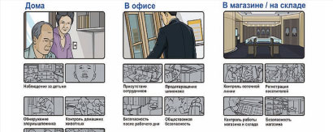
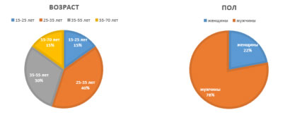
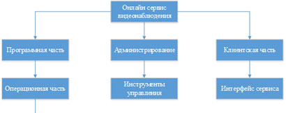
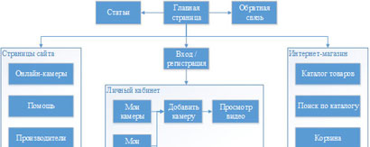
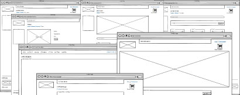
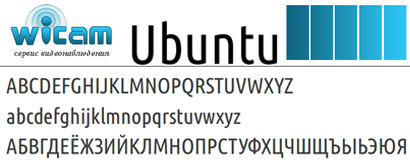

Видеонаблюдение полезный и важный сервис, но для установки и обслуживания необходимы глубокие знания, время и деньги. Чтобы облегчить жизнь пользователю, создаются онлайн-сервисы видеонаблюдения. К основным преимуществам онлайн-сервиса видеонаблюдения можно отнести простоту построения и использования, отсутствие стартовых инвестиций, отсутствие необходимости технического обслуживании видеосистемы.

Применение. Современное видеонаблюдение может решать огромное количество бытовых задач: следить за детьми и домашними животными, наблюдать за сотрудниками в магазине и офисе, контролировать работу няни и уборщицы. Все, что для этого будет нужно – доступ в Интернет. Применение современных систем видеонаблюдения представлено на рисунке:

{kind=link}
Основные группы целевой аудитории сайта: посетители, которые хотят наблюдать за детьми, работниками, автомобилем, дачей; организациии, желающие получить комплексное качественное решение видеонаблюдения; жильцы домов, которые хотят иметь возможность доступа к камерам территории дома; посетители, заинтересованные в приобретении оборудования для видеонаблюдения; посетители интересующиеся просмотром камер в реальном времени. На рисунке ниже показаны диаграммы, отражающие некоторые характеристики пользователей сайта.

{kind=link}
Архитектура сайта состоит из клиентской, программной и административной части.Администраторская часть содержит инструменты управления сайтом и включает в себя как общие настройки сайта, так и специальные настройки. В клиентской части архитектуры разрабатывается максимально удобная и доступная работа потенциального клиента на страницах сайта, понятный интерфейс, доступные диалоговые окна, удобная система видеонаблюдения. Программная часть сайта рассматривается как взаимосвязь операционной и серверной части. Серверная часть содержит в себе размещение сайта на сайте провайдера, поддерживающие технологии, используемые при создании сайта. Архитектура сайта представлена на рисунке.

{kind=link}
Проектирование информационной архитектуры сайта
Структура сайта будет представлять собой следующие модули:
Интернет-магазин: каталог товаров с системой поиска товара, а также отбора товара по цене, корзина и оформление заказа.
Авторизация и регистрация пользователя на сайте.
Личный кабинет: персональные данные, изменение пароля, просмотр заказов, просмотр и добавление камер.
Обратная связь.
Статьи.
Страницы сайта: онлайн-камеры, помощь, производители.
Информационная архитектура сайта представлена на рисунке

{kind=link}
Проектирование схемы навигации сайта Немаловажная роль в разработке сайта отводится схеме навигации. Продуманная навигационная схема (меню) сайта должна предоставлять возможность - оценить, какая информация находится на сайте, и насколько быстро до неё можно добраться. Находясь на любой странице посетитель должен представлять своё местоположение, знать, что он может сделать на этой странице, и куда можно пойти дальше. На рисунке 2.3 представлена схема навигации сайта, которая предоставляет возможность перейти в любой раздел сайта, что делает ее простой и удобной.

Макетирование.Онлайн-сервис видеонаблюдения wicam.by состоит из следующих макетов страниц: макет главной страницы сайта ; макет интернет-магазина сайта ; макет категории товара интернет-магазина; макет страницы товара; макет корзины ; макет личного кабинета; макет администраторской части; макет страницы сайта.

{kind=link}
Проектирование графического дизайна сайта Логотип онлайн-сервиса видеонаблюдения «Wicam» представляет собой стилизованную надпись. Логотип простой, легко узнаваем и читаем. Цветовая гамма сайта: сочетание синего и голубого цветов на светло-сером фоне. Голубой цвет - цвет гармонии, удовольствия, цвет покоя и равновесии. Синий цвет- цвет удачи. Еще синий цвет считают цветом стабильности, умиротворенности, глубоких мыслей и раздумий. Ведь не даром некоторые социальные сети выбирают именно этот цвет например facebook, vkontakte, а им важно, чтобы людям было комфортно пользоваться сервисом.Фирменный шрифт без засечек «Ubuntu» Логотип, фирменные цвета, шрифт представлены на рисунке

{kind=link}
Моделирование процесса разработки сайта Для моделирования процесса разработки сайта были созданы следующие диаграммы: диаграмма вариантов использования сайта (Use case diagram) Диаграмма последовательности (Sequence diagram) для основного потока событий варианта использования «авторизации» Диаграмма взаимодействия объектов (Collaboration diagram) для основного потока событий варианта использования «авторизации»
 Продолжение - Часть 2 →
Продолжение - Часть 2 →
Прокомментируйте
Будьте серьезны!